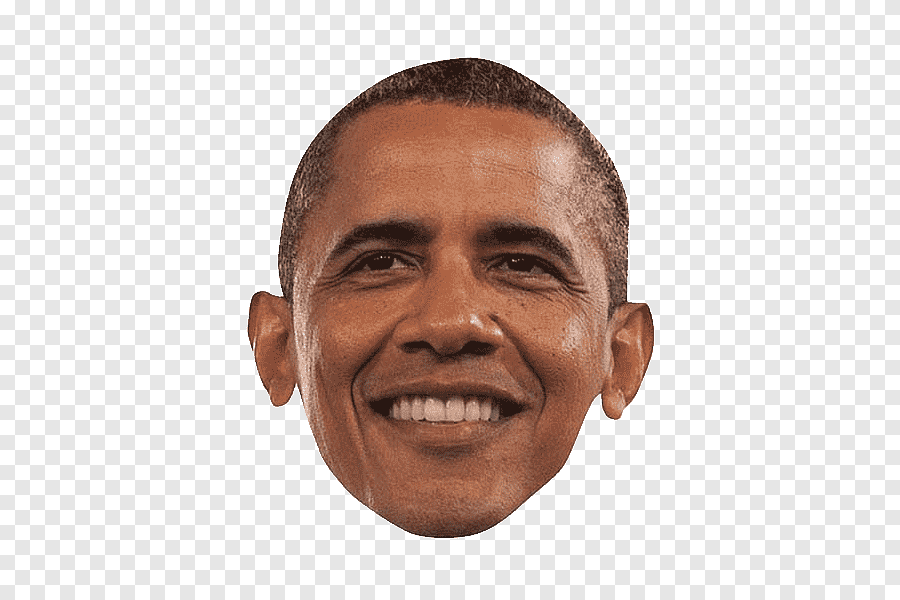

Меню |
Голова Голова - часть тела человека (или животного), состоящая из черепной коробки и лица (у животного морды); у беспозвоночных передний, относительно обособленный участок тела с органами чувств и ротовым отверстием. Голову повесить, понурить (также перен.: прийти в уныние; разг.). С высоко поднятой головой (также перен.: гордо). Склонить (обнажить) голову перед кем-н. (также перен.: выразить своё уважение, преклонение; высок.). |
|
|
Copyright © 1111. Все права защищены. |
||